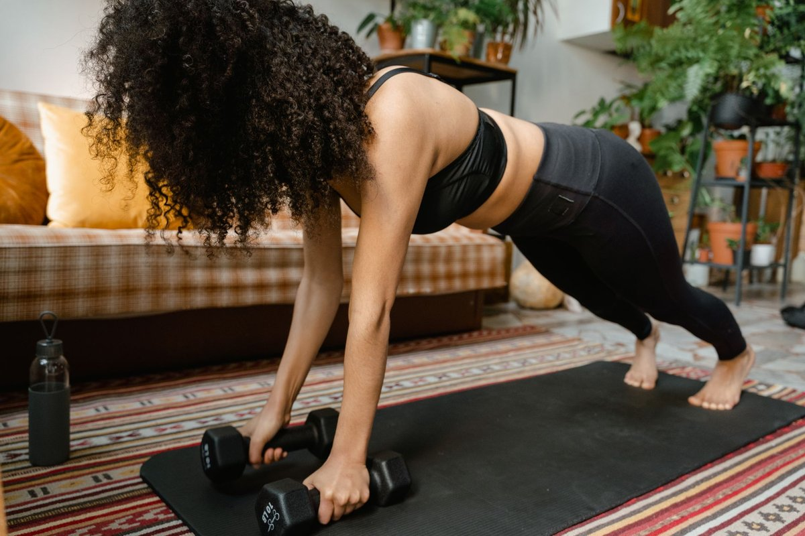

How I Finally Made Home Workouts Stick in a Tiny Apartment

Key takeaways
- I used to kick my coffee table every single time I attempted a jump squat in my tiny studio apartment.
- After knocking over a floor lamp and bruising my shin for the third time, I shoved my yoga mat into the closet and quit for six months.
- Focus on: The Small-Space Realization.
I used to kick my coffee table every single time I attempted a jump squat in my tiny studio apartment. After knocking over a floor lamp and bruising my shin for the third time, I shoved my yoga mat into the closet and quit for six months.
I convinced myself that building real muscle required a sprawling garage gym or an expensive commercial facility. But I was totally wrong about building strength in a tight footprint.
The Small-Space Realization
Realizing you don't need five hundred square feet to get fit changes everything. I swapped dynamic, room-spanning moves for controlled isometric holds and tempo variations.
Instead of sprawling out, I focused on verticality and tension. You can check out this related healthy tip to see how my daily routine shifted mentally.
Mastering No-Equipment Resistance
By slowing down every rep, my carpeted six-foot strip of floor became more intense than any leg press machine. **Time under tension is the ultimate equalizer when space is tight.**
I started doing decline push-ups with my feet on the edge of my sofa. My core had to work twice as hard just to keep me stable in that narrow hallway.
If you struggle with motivation, read this another practical guide on habit stacking in small spaces.
Pro-Tip: Use a hardwood doorway for wall slides and isometric pulls. It takes up zero floor space while firing up your posterior chain.
Eliminating the Obstacles
When your workout space doubles as your living room, friction is your biggest enemy. I stopped buying gear that required storage and focused purely on bodyweight mastery.
Single-leg pistol squats to a kitchen chair gave me a killer leg workout. **You do not need a rack of weights to build strong glutes and quads.**
For more momentum, explore this similar wellness insight on managing busy schedules. You can also review how to stay consistent with this micro-routine approach.
The 2-Minute Win
Pick one empty wall right now. Do a 60-second wall sit followed immediately by 60 seconds of slow calf raises. You just triggered leg muscle activation without moving an inch.
Consistency Over Intensity
I stopped treating my living room like a crossfit box and started treating it like a personal movement lab. Doing ten focused minutes every morning beat my old pattern of burning out once a month.
Now, my living room stays a living room, but my fitness routine actually happens. To build a sustainable lifestyle, explore more home-workouts guides today.
Educational only — not medical advice.
Recommended Reading
- No-Equipment Strength for Small Spaces: Get Stronger
- The Ultimate Guide to Daily Hydration: Boost Energy & Wellness
- Quick Home Strength Workouts for Any Space
More in home-workouts
 home-workouts
home-workoutsHome Strength: No Equipment, Maximum Impact
Discover how to build strength at home with no equipment. This guide offers effective, space-saving workouts for real re
Read article → home-workouts
home-workoutsQuick Home Strength Workouts for Any Space
Discover effective no-equipment strength training routines you can do at home, even in the smallest spaces. Get stronger
Read article →Related posts
home-workoutsHome Strength: No Equipment, Maximum Impact
Discover how to build strength at home with no equipment. This guide offers effective, space-saving workouts for real re
Read article →home-workoutsQuick Home Strength Workouts for Any Space
Discover effective no-equipment strength training routines you can do at home, even in the smallest spaces. Get stronger
Read article → home-workouts
home-workoutsNo-Equipment Strength for Small Spaces: Get Stronger
Discover how to build serious strength at home with no equipment, even in the smallest apartments. My honest guide to ef
Read article →